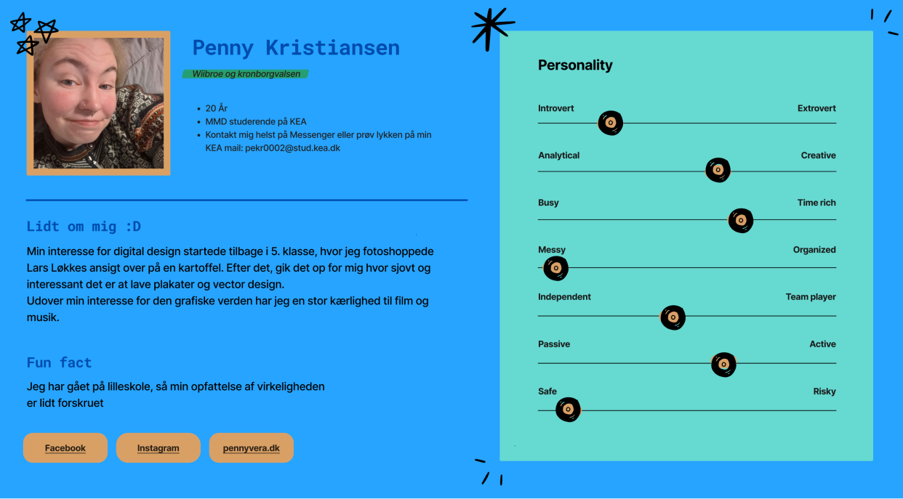

Tema 1 - Introuge
Tema beskivelse
Alt og alle er nye, og jeg blev kastet ud i en opgave om at lave en titlesekvens uden nogen forberedelse eller programmer.
Programmer og værktøj
- Figma
- Design
Ugeopgaven
Videoen er inspireret af titlesekvensen for ”sjit happens”. Den består af en små korte klip i slowmotion samt en masse forskellige akavet situationer som man kan stå i som ny studerende på KEA
galleri

Præsentationskort
Præsentationskort lavet i figma, med kort introduktion til mig